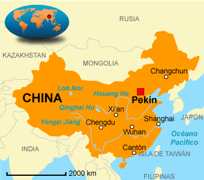
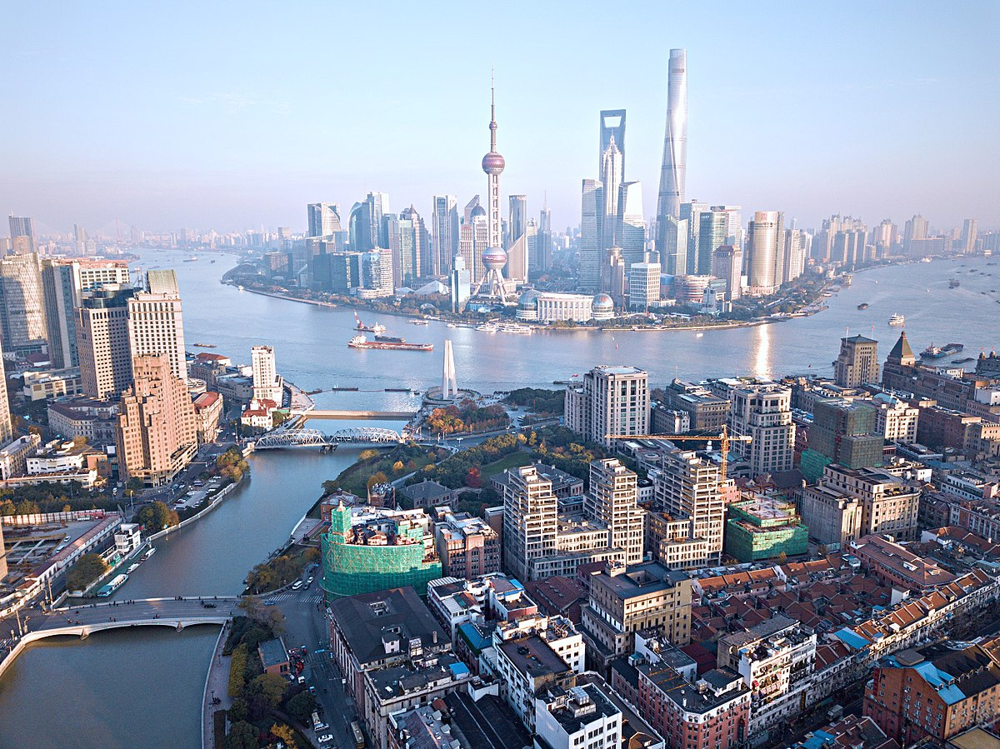

China
| Información | |||||||||||||||||||||
|---|---|---|---|---|---|---|---|---|---|---|---|---|---|---|---|---|---|---|---|---|---|
|
Es un país soberano de Asia Oriental. Es el país más poblado del mundo, con más de 1400 millones de habitantes, y la primera potencia económica mundial por PIB en términos de paridad de poder adquisitivo.China es una de las mejo res opciones para ir de viaje por su cultura diferente, sus grandes ciudades y grandes paisajes. |  | ||||||||||||||||||||
| Actividades | |||||||||||||||||||||
Visitar la gran muralla chinaUna de las obras de ingeniería más espectaculares del mundo (aunque no, no se ve desde el espacio). Lo más fácil es hacerlo en una visita en el día desde Pekín. |

| ||||||||||||||||||||
Visitar ShanghaiChina también es famosa por sus grandes ciudades como Shanghai, no puedes pasar por este país sin dar una vuelta y conocer esta gigantesca y hermosa ciudad. |  | ||||||||||||||||||||
Ver el Buda de LeshanEsculpido en la ladera de un acantilado. Mide unos 70 metros de alto, convirtiéndose en la escultura de Buda en roca más gra nde del mundo.Sin duda no puedes pasar por este país sin ver este hermoso monumento | |||||||||||||||||||||
Aquí te dejamos un vídeo que podría aclararte algunas ideas sobre tu viaje. | |||||||||||||||||||||
| Alojamiento | |||||||||||||||||||||
| |||||||||||||||||||||
| Restaurantes | |||||||||||||||||||||

|
Sukiyabashi JiroUn restaurante de sushi muy pequeño en Tokio con solo diez asientos en la barra. Este establecimiento ha sido galardonado con tres estrellas. El restaurante apareció en el documental Jiro Dreams of Sushi de 2011, y un chef francés declaró que el resta urante le mostró que el sushi es una forma de arte. El menú de degustación omakase de 20 platos cuesta alrededor de 30.000 yenes. | ||||||||||||||||||||
Ginza KojyuElige entre sushi, más de 60 vinos diferentes, sake, ofertas de temporada o elija su menú kaiseki de varios platos en un comedor tipo zen. El Chef Toru Okuda tiene otros 2 restaurantes en Tokio, en caso de que no esté disponible para reservar durante tu estancia en la ciudad. El precio ronda los 25.000 yenes |

| ||||||||||||||||||||